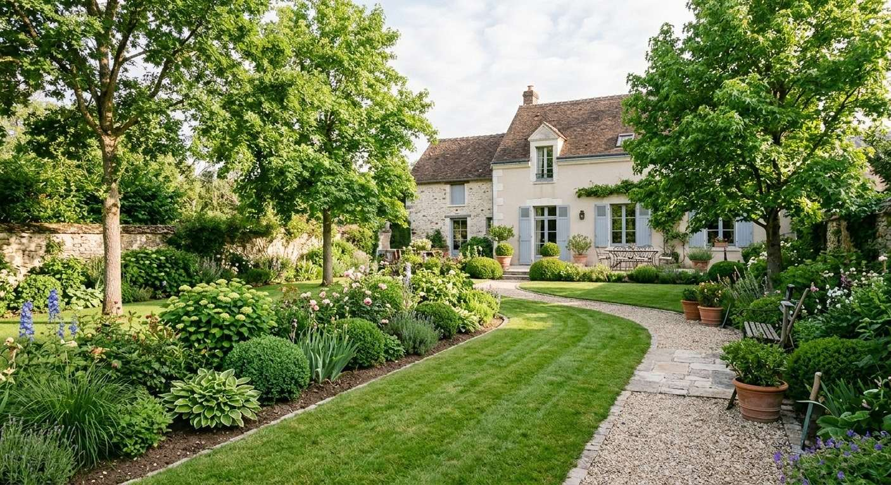
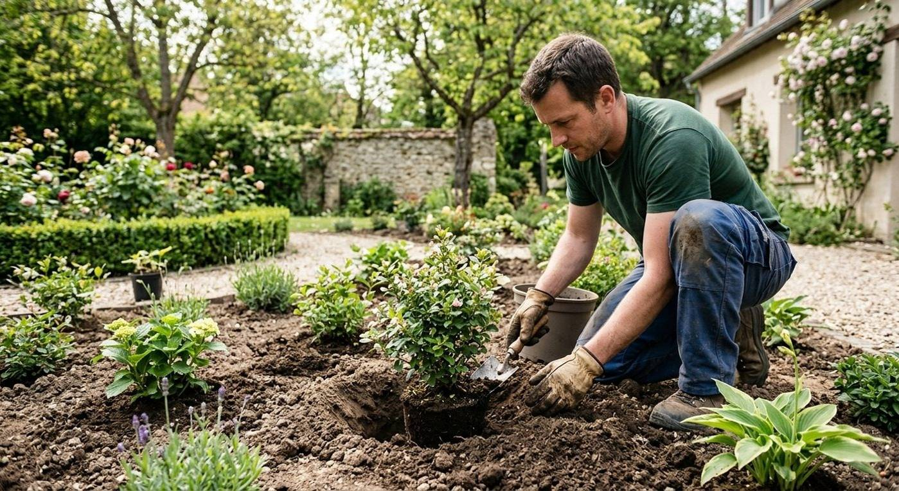
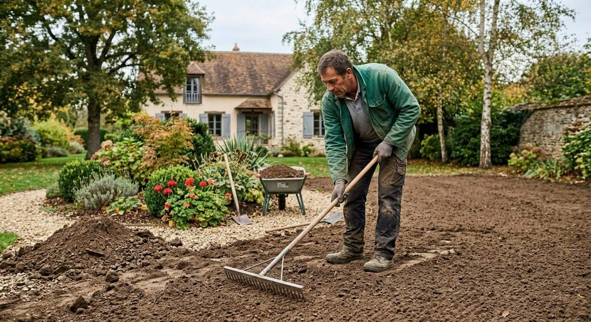
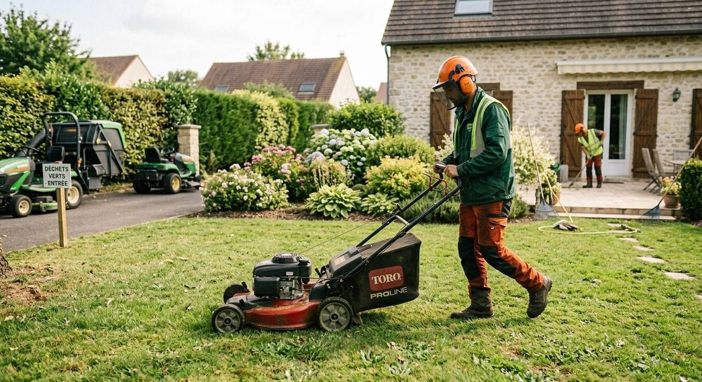

Entretien de jardin
Tonte, désherbage et ramassage des feuilles pour garder pelouses et massifs en bon état.
Prestations
Création de jardins, plantations, pelouses et entretien : La Fabrique de Jardin intervient à Poissy (78).



Création de jardins
Massifs, pelouses et plantations : un aménagement adapté à votre terrain et à l'usage que vous faites de votre extérieur.


Terrasses et allées
Plantation d'arbres, d'arbustes et de vivaces, pose de gazon ou semis pour installer ou refaire une pelouse.


Entretien et taille
Tonte, désherbage et ramassage des feuilles pour garder pelouses et massifs en bon état.

Taille des haies et des arbustes pour des lignes nettes et des végétaux en bonne santé.
Appelez ou envoyez une demande : nous reviendrons vers vous pour discuter de votre projet.
Paysagiste à Poissy (78) : création, plantations et entretien de jardins.
© La Fabrique de Jardin · Maquette de démonstration